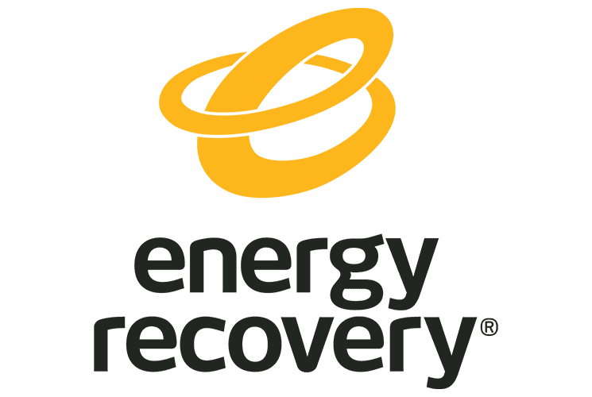
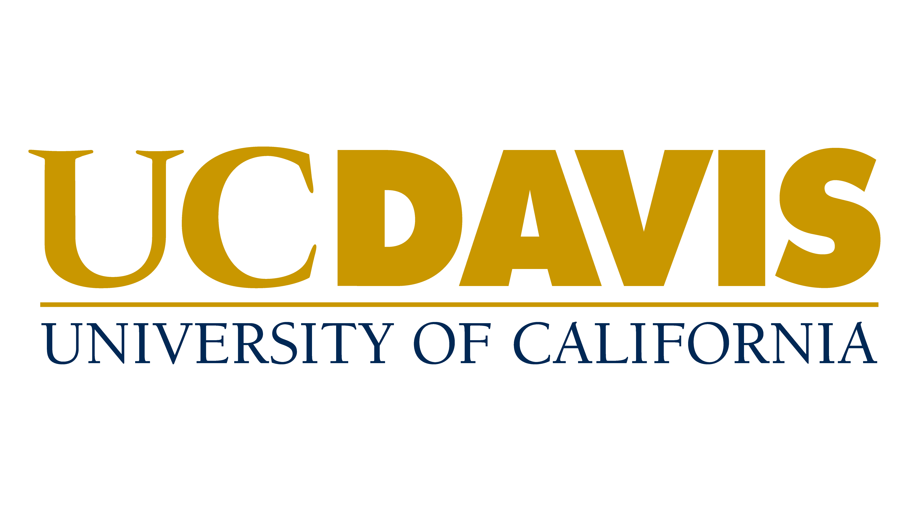

Experience
View full timeline (2016–present) →
SpaceXAI (formerly xAI)
Chemical Engineering AI Specialist · Part-timeJun 2026 – Present
- Design PhD-level, research-grade technical problems and datasets in chemical engineering, with an emphasis on process control and process systems engineering, to advance AI models' capacity for deep domain-expert reasoning.
- Apply process control and systems engineering expertise to evaluate AI model outputs against PhD-level technical standards, helping shape model training toward genuine domain competence.

Energy Recovery Inc.
Systems Modeling & Data Science Engineer · InternshipJun 2025 – Mar 2026
- Took ownership of a live R&D control systems project for an industrial CO2 refrigeration product line, supporting R&D, field controls, and business stakeholders.
- Built a first-principles simulation engine modeling transcritical CO2 fluid dynamics, and calibrated supervisory and PID control strategies that reduced high-pressure oscillations by roughly 60% and improved system efficiency by 10 to 15%.
- Combined physics-based and machine-learning models on high-frequency sensor telemetry to quantify system performance, validating operational cost reductions of 5 to 15% across client sites.
- Built and deployed a cloud-hosted simulation platform and real-time monitoring dashboards used by engineering and business teams across multiple sites.

UC Davis
Graduate Student Researcher, Control Theory & Process Systems · Full-timeJan 2022 – Present
- Publish research on control-theoretic and machine-learning methods for cyberattack-resilient and fault-tolerant process control, applied to simulated industrial-scale chemical processes.
- Built neural-network-based fault detectors that identify and automatically accommodate multiple simultaneous sensor faults, validated in simulation and shown to generalize beyond the fault conditions seen in training.
- Screened thousands of candidate control-system designs to identify which architectures are resilient to cyberattacks, and what minimal changes make a vulnerable design fully resilient.
- Collaborated on a hardware-validated observer for heat pump water heaters that cut estimation error by over a third, tested against a real unit.
- Mentored undergraduate researchers through UC Davis's E-Search program.
UC Davis, Energy Conservation Office
Data Science Intern · Internship/VolunteeringJun 2022 – Aug 2022
- Built a PCA-based anomaly detection tool in Python to monitor HVAC sensor data across campus buildings, validated against confirmed field faults.
L&T Technology Services
Process Engineering Intern · InternshipJan 2021 – Jul 2021
- Supported process design and optimization within an engineering-services firm's plant division, using simulation tools for line sizing, pump hydraulics, and heat exchanger design across multiple client projects.
- Collaborated with multidisciplinary engineering teams to develop simulation-based recommendations that improved process efficiency.
Also
UC Davis · Teaching AssistantOct 2021 – Jun 2026
Indian Oil Corporation · Chemical Engineering InternMay 2019 – Jun 2019
Microtek Research & Analytical Lab · Research InternDec 2020 – Jan 2021